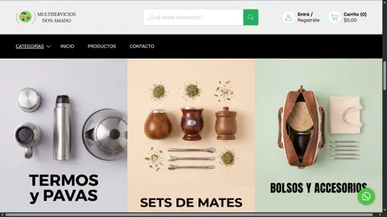

Una presencia digital preparada para convertir catálogo, confianza y consultas en ventas reales.
Multiservicios Don Amado necesitaba una tienda online clara, rápida y profesional para competir en un rubro donde la confianza y la facilidad de compra son decisivas.
El negocio ya contaba con una propuesta comercial sólida, pero necesitaba ordenar su presencia digital para que el usuario pudiera entender productos, categorías y canales de contacto sin fricción.
El rubro construcción y herramientas requiere jerarquía visual, información clara y navegación simple para encontrar rápido lo que el cliente busca.
Una experiencia poco clara hace que el usuario abandone antes de pedir precio, disponibilidad o asesoramiento.
El proyecto se enfocó en construir una tienda online que transmitiera confianza, explicara la oferta y facilitara el contacto desde dispositivos móviles.
Diseñamos una experiencia visual premium sobre una estructura de e-commerce práctica: categorías claras, producto como protagonista y recorridos pensados para consulta o compra.
La estética se trabajó para transmitir escala, seriedad y profesionalismo sin perder claridad. La prioridad fue que el usuario pueda navegar, evaluar y consultar con facilidad.

Botones claros, bloques legibles y enfoque en la velocidad de decisión.
Diseño sobrio y consistente para elevar la percepción del negocio.
El resultado fue una tienda online preparada para recibir tráfico, mostrar catálogo y convertir visitas en consultas comerciales con una experiencia mucho más profesional.
El visitante entiende rápido qué ofrece la empresa y cómo avanzar.
La web funciona como base para campañas, consultas y crecimiento del catálogo.
Diseñamos sitios y e-commerce que no solo se ven bien: ayudan a vender, ordenar la operación y construir confianza.
Tiendanube, WooCommerce, catálogo, checkout, medios de pago y experiencia mobile.
+54 388 867-5361
Portfolio, servicios y casos de desarrollo web orientado a conversión.